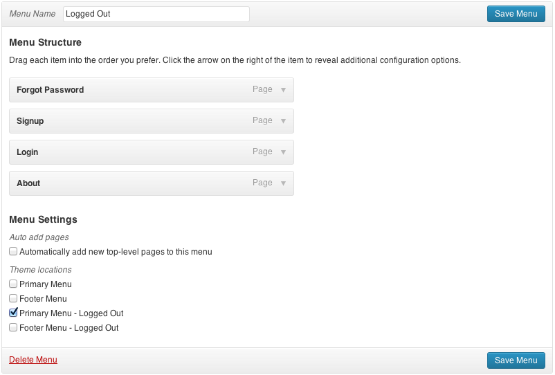
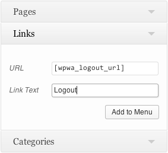
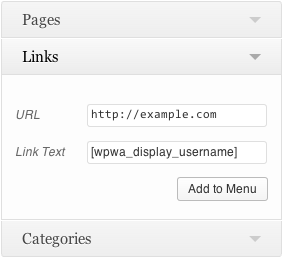

You may want to show different navigation elements to users who are logged in versus those who are not.
WordPress for Web Apps creates * - Logged Out versions of any navigation menus that are registered in your theme. Just use the drag-and-drop menu tool in the admin dashboard, and assign your navigation to the appropriate menu.

Menus without the - Logged Out suffix are only shown to logged-in users. If you don't assign logged-out menus, they show all pages by default.
WordPress provides a built-in logout link function:
<a href="<?php echo wp_logout_url(); ?>">Sign Out</a>Simply add that as the href value to any link to log a user out and redirect them to the homepage.
You can't use PHP scripts in the WordPress content editor, though. If you'd like to add a logout link that way, WordPress for Web Apps includes a shortcode you can use instead: [wpwa_logout_url].
<a href="[wpwa_logout_url]">Sign Out</a>While you normally can't use shortcodes to add navigation menu links, WordPress for Web Apps let you use the logout shortcode.

WordPress also provides a simple way to display a user's username in a theme template file:
<?php $current_user = wp_get_current_user(); echo $current_user->user_login; ?>To display a username in the WordPress content editor, use the [wpwa_display_username] shortcode. Like the logout shortcode, you can use the display username shortcode in the navigation menu editor.
